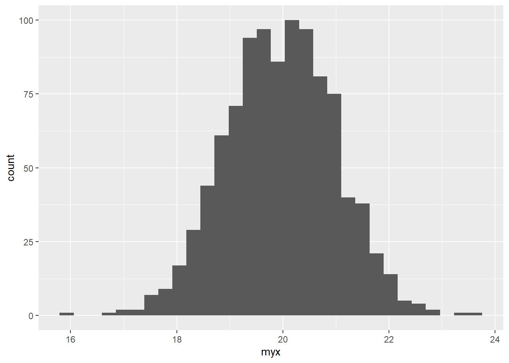
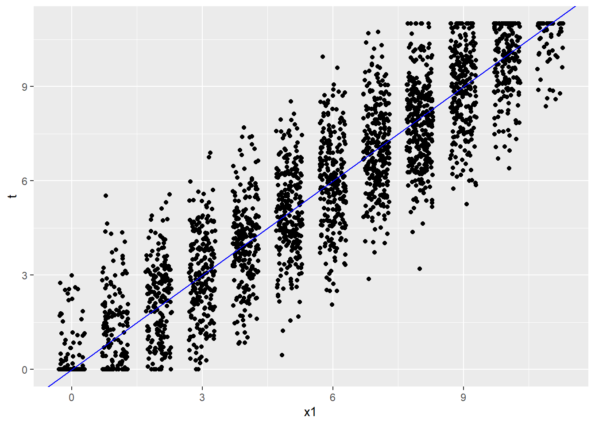

4 R Code for Module 5
4.1 Simulate a constant true score
In this example, I simulate a constant true score, and randomly varying error scores from a normal population with mean 0 and SD 1 Note, set.seed() gives R a starting point for generating random numbers, so we can get the same results on different computers
You should check the mean and SD of E and X. Creating a histogram of X might be interesting too…
library(tidyverse)
set.seed(160416)
myt <- 20
mye <- rnorm(1000, mean = 0, sd = 1)
myx <- myt + mye
df=data.frame(myx,myt,mye)
mean(myx); sd(myx)
#> [1] 20
#> [1] 1.03
p <- ggplot(df, aes(x=myx)) +
geom_histogram()
p
#> `stat_bin()` using `bins = 30`. Pick better value with `binwidth`.
4.2 PISA total reading scores with simulated error and true scores based on CTT
## Libraries
#install.packages("devtools")
#devtools::install_github("talbano/epmr")
library(epmr)
#>
#> Attaching package: 'epmr'
#> The following object is masked from 'package:psych':
#>
#> skew
library(ggplot2)
ritems <- c("r414q02", "r414q11", "r414q06", "r414q09",
"r452q03", "r452q04", "r452q06", "r452q07", "r458q01",
"r458q07", "r458q04")
rsitems <- paste0(ritems, "s")
BEL_PISA09=PISA09[PISA09$cnt == "BEL", rsitems]
xscores <- rowSums(BEL_PISA09,
na.rm = TRUE)Simulate error scores based on known SEM of 1.4, which we’ll calculate later, then create true scores True scores are truncated to fall between 0 and 11 using setrange()
escores <- rnorm(length(xscores), 0, 1.4)
tscores <- setrange(xscores - escores, y = xscores)Combine in a data frame and create a scatterplot
scores <- data.frame(x1 = xscores, t = tscores,
e = escores)
ggplot(scores, aes(x1, t)) +
geom_point(position = position_jitter(w = .3)) +
geom_abline(col = "blue")
4.3 Reliability and unreliability Illustrated
Here we have simulated scores for a new form of the reading test called y. Note that rho is the made up reliability, which is set to 0.80, and x is the original reading total scores. Form y, which is slightly easier than x, has a mean of 6 and SD of 3.
xysim <- rsim(rho = .8, x = scores$x1, meany = 6, sdy = 3)
scores$y <- round(setrange(xysim$y, scores$x1))
ggplot(scores, aes(x1, y)) +
geom_point(position = position_jitter(w = .3, h = .3)) +
geom_abline(col = "blue")Figure 4.1: PISA total reading scores and scores on a simulated second form of the reading test.